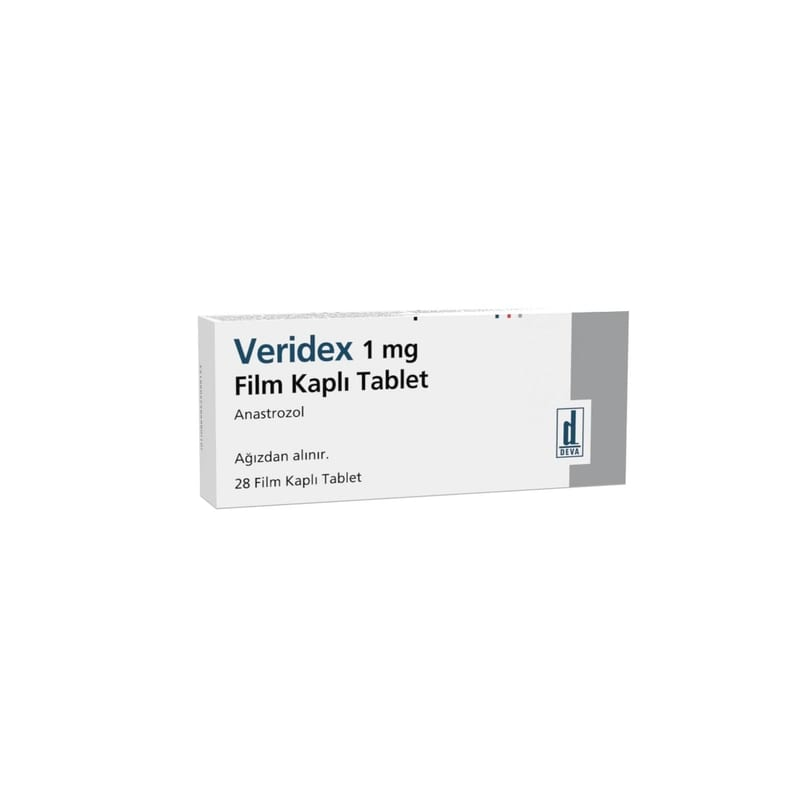

Veridex 1 mg Film Kaplı Tablet, 28 Adet

Ne için kullanılır
KT · Bölüm 1Beyaz, yuvarlak, bikonveks, iki tarafı düz, çentiksiz film kaplı tabletlerdir. VERİDEX'in etkin maddesi anastrozol'dur.
VERİDEX, aromataz inhibitörleri olarak adlandırılan ilaç grubuna dahildir. Bu ilaç vücutta bulunan bir enzim olan aromatazın etkilerini engeller. Aromataz enzimi menapoza girmiş olan kadınlarda böbrek üstü bezinden östrojen adlı kadınlık hormonunun üretilmesini sağlamaktadır. Bu kadınlık hormonları meme kanseri üzerinde uyarıcı etki göstermektedir. VERİDEX, aromataz enziminin etkisini engelleyerek menopoz sonrasındaki kadınlık hormonu üretimini azaltır.
VERİDEX, menopoz sonrası kadınlarda meme kanserinin tedavisinde kullanılır. VERİDEX film tablet 28 tablet içeren ambalajda sunulmaktadır.